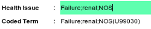

|  |
- In this case we selected 'Renal Failure NOS as the coded term, but it is not all that descriptive as this patient has very poor renal failure, so we can change the actual health issue to something more descriptive, without losing the
benefit of a the issue being coded.
|